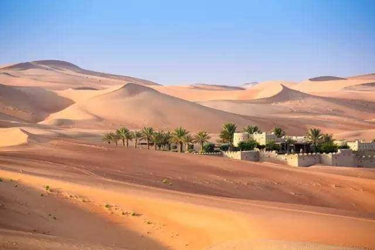

morly旅游网
阿布扎比没有迪拜那么大的名气,但阿布扎比是一个比迪拜更富有,资源更丰富的地方
无论您是第一次游览阿布扎比还是故地重游，无论您在梦幻般的水上乐园嬉戏泛起浪花、还是惊叹于最高峰杰布哈菲特的质朴粗犷，是体验世界上最快的过山车带来的惊心动魄，还是置身于唯一一家可以眺望F1赛道的酒店，亦或是在世界最斜人造塔一角用餐，您都会发现吸引您重游阿布扎比的理由。
阿布扎比是阿联酋最大的城市，拥有优越的地理位置，面朝波斯湾，背靠金色沙漠，是中东地区少有的大海和沙漠共存的好地方。这里不仅有迷人的海滩风光，雄伟奇特的建筑，还是多部电影和电视剧的拍摄地。阿布扎比是一座蓬勃发展的新型城市，它也许没有老城的历史，也没有丰富的地貌风景，但阿布扎比正充满勃勃的野心去发展成为一个更便捷、更科技、更环保、更宜居的未来之城。
阿布扎比在距离迪拜170公里的地方，这里拥有阿联酋80%以上的土地和90%的石油存储，与其说它是一座城市，不如说它是一个比迪拜还有奢华的王国。行走在阿布扎比的街道上仿佛回到了古老而神秘的阿拉伯王国。一半海水，一半沙漠的阿布扎比完全犹如《欲望都市》中提到的那般，“迪拜已经成为过去，而阿布扎比才是未来”，阿布扎比是对这里“城市”的重新定义。
阿布扎比玩什么？
谢赫扎伊德清真寺
伊斯兰教是整个阿拉伯世界的灵魂所在，这座阿联酋最大，世界第三大的谢赫扎伊清真寺是阿布扎比必去的朝圣地，也是世界上唯一一座允许女性从正门进入的清真寺。谢赫扎耶德清真寺是世界上最宏伟的清真寺之一，这座清真寺是为了纪念阿联酋国父扎耶德·本·苏丹·阿尔·纳罕酋长（1918-2004）而建，历时12年，造价达55亿美元，汇集世界各地的顶级建材和优秀艺术家，铸造出了奢华的宗教圣地。
据说，谢赫扎伊德清真寺最美的时刻是在日落，圣殿在自然光影和景观灯光的变幻间流动着五颜六色的光，灵动而妖娆，那个瞬间，大概天堂就是这个样子吧.如果说初见大清真寺的感觉是震撼，那么当踏入殿前庭院时会觉得心瞬间被撞了一下。庭院地面全是光洁的白色大理石，中间镶嵌着巨型彩色花草图案。
阿布扎比卢浮宫博物馆
阿布扎比卢浮宫和法国在2007年3月签了价值约近10亿欧元的合作合同，这间博物馆将使用巴黎卢浮宫的名称并会租借巴黎卢浮宫以及其他法国博物馆的藏品，租借期为30年。这座建筑由曾获普利兹克奖的法国著名建筑师Jean Nouvel设计，其中2/3的面积被巨大的圆顶覆盖，看上去像一座浮岛，完美地结合了现代和阿拉伯风格。
海滨大道
都说阿布扎比是一半沙漠，一半海水，阿布扎比有一条10多公里的海滨大道，举世闻名，绵延千里的海岸线上铺洒着中东阳光。大道两旁不仅有高大的桉树、椰枣树和灌木树丛，还建有修整得各具风格的小花园、绿草地和喷水池，与路旁的湛蓝大海融成一片。 漫步在海滨大道上基本与欧洲城市的感觉无异。说它是沙漠中的新绿洲当之无愧。


内容整理至网络，如有侵权，请联系我们！1255394075@qq.com